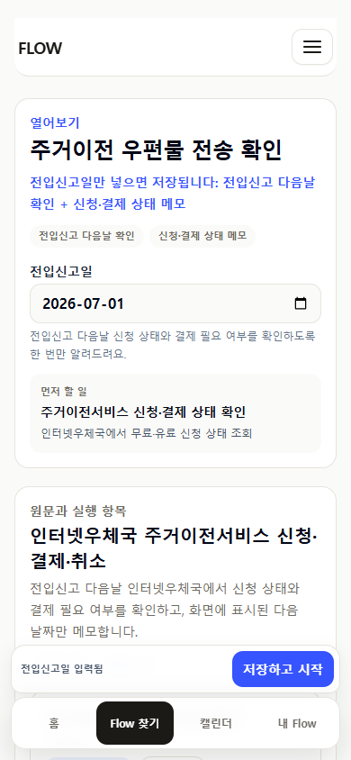
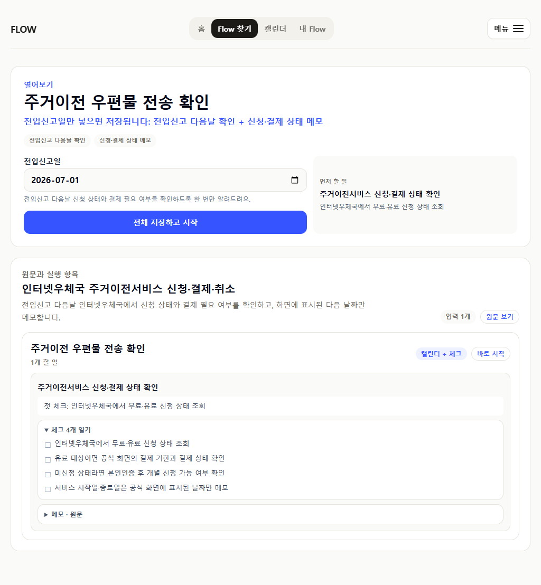
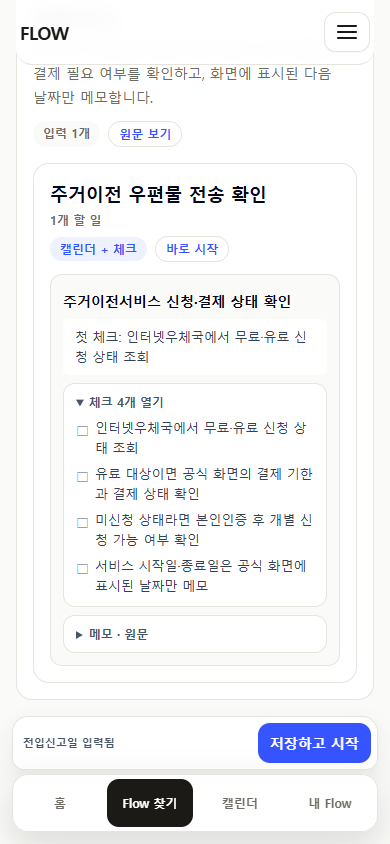
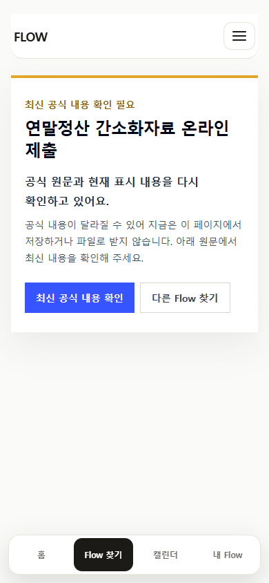
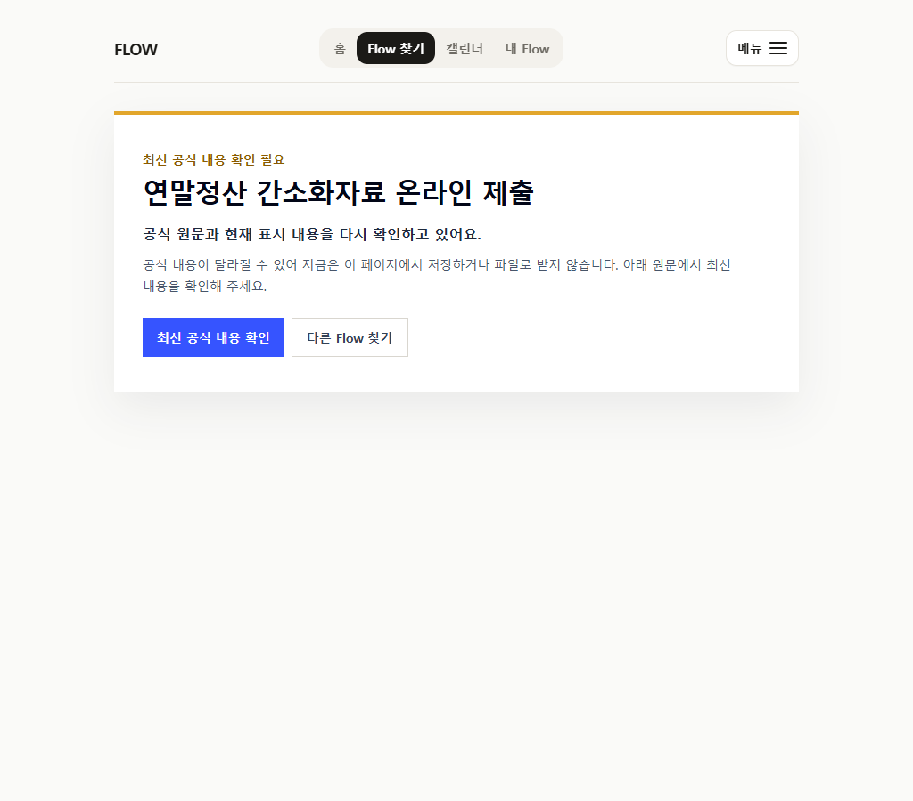
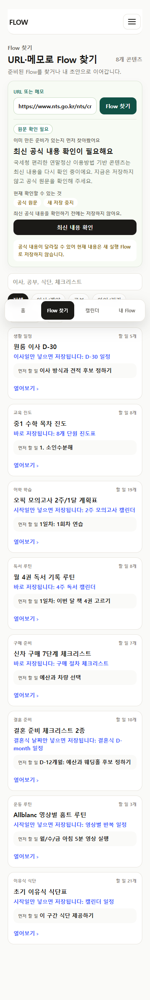
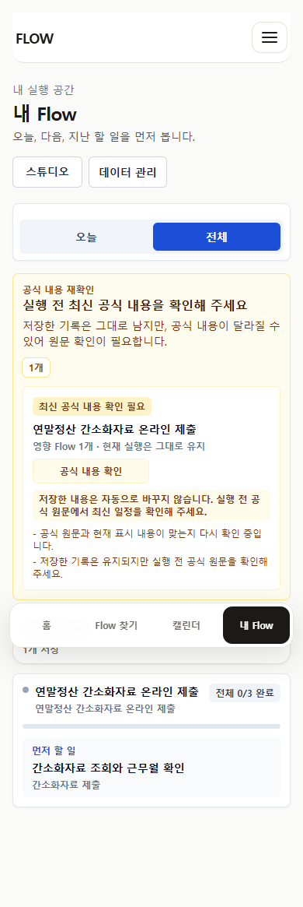

2026-07-12 current-source review
오래된 페이지를 실행 일정으로
그대로 믿지 않게 만들기
접속 가능한 공식 URL이라는 이유만으로 현재 실행을 열지 않았다. 우편은 공식적으로 확정 가능한 한 번의 확인만 남겼고, 연말정산은 연도별 재작성 전까지 새 저장과 파일 받기를 멈췄다.
우편 실행 row3 → 1
우편 임의 날짜2 → 0
세금 공개 일정3 → 0
URL 우회0
결정
우편물 이전: 검증된 최소 실행
D+1 상태 확인만 캘린더에 둔다. 영업일에 따라 달라지는 결제기한과 서비스 시작일은 공식 화면에서 확인한 값만 메모한다.
연말정산 제출: review hold
2025년 등록 영상과 제품이 만든 D-3/D-1 분할을 최신 공식 일정처럼 제공하지 않는다. 기존 개인 기록은 경고와 함께 유지한다.
정책 판정
| 우편 direct route | 저장 가능. 전입신고 다음날 확인 1개. 390/1024 overflow 0. |
|---|---|
| 세금 direct route | 200 + noindex 유지. save/export/예전 일정 row 0. 최신 국세청 종합 안내 링크 제공. |
| 세금 URL-first | 구 영상 URL과 현재 안내 URL 모두 needs_review. 저장·export·draft 우회 0. |
| 기존 저장 기록 | 자동 삭제·교체 없음. 공식 내용 확인 경고는 숨길 수 없음. |
우편물 이전



연말정산 review hold




다음 콘텐츠 점검
1. Funmom 학습공원: 원문 범위를 넘어선 학습 행이 없는지 확인한다.
2. 에어컨 필터: 제품 모델 적용 범위와 2주 반복 근거를 확인한다.